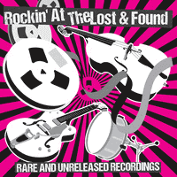

VA - Rockin' At The Lost & Found - Rare & Unreleased Recordings (2018)
the Misdeals:
01 - Wild Wild Lover (2:48)
02 - Linda Lou (1:48)
03 - Blues Stop Knocking At My Door (1:58)
the Mostly Losers (and Bill Fadden):
04 - Close To Me (2:25)
05 - The Ballad Of John & Yoko (3:04)
the Nervous Brothers:
06 - I'm Nervous (2:33)
07 - We're Rockin' (2:50)
Graham Bice (and the Western All-Stars):
08 - Only At The Weekend (3:15)
09 - Rock 'n' Roll Blues (3:13)
10 - All The Time (2:02)
11 - Wiggle (2:18)
Billy Oxley (and the Western All-Stars):
12 - Still As The Night (2:57)
13 - Lonely Moon (2:31)
the Ruffians:
14 - Don't You Mess With Me (1:50)
15 - Mister Cool (2:05)
Slick 49:
16 - It'd Be A Doggin' Lie (2:05)
Lori Jade:
17 - You & Me (2:37)
Bill James and (the Western All-Stars):
18 - The Way I Walk (2:39)
Ricky Ford (and the Western All-Stars):
19 - You're Gonna Cry (2:08)
20 - Falling (2:22)
21 - Little Baby (2:36)
Howlin' Wilson:
22 - The Gibberish Man (2:36)
23 - Am I Enough For You (3:20)
the Western All-Stars:
24 - Ain't No Pleasing You (4:18)
25 - White Wedding (3:38)
© Western Star :: [Digital]
Notes
reference information: Youtube Music showcase
Review
347/366 (Project 366)
Rock'n'Roll Pop and Rockabilly compilation with backdrop of the spice of the fifties, sixties and seventies. Interesting recordings, mighty compositions, curious sketches, conceptual pop things and demos.
The first three tracks represent the Misdeals. Rockin' pills consisting of raw, fast enough and a bit ardent Rockabilly moods. "Wild Wild Lover" with its volcano feel, "Linda Lou" with its extremely impetuous impulse, "Blues Stop Knocking At My Door" with its melodious singing - all are about Rock'n'Roll, old fashioned, boppin' and tappin' one. The next two songs by Bill Fadden and the Mostly Losers continue the wave well. "Close To Me" is a very sweet Rockabilly song. With so charming vocals, top-notch guitars and smooth rhythm. Fancy Rock'n'Roll with "The Ballad Of John & Yoko" then.
At this stage, dynamic the Nervous Brothers appears. "I'm Nervous" with such a cool and straightforward tune, remind of Teds. And so classic UK Rockabilly with its Revival twist and passion. Which, in general, is even described in the next song "We're Rockin'". Continues tracklist Graham Bice (and the Western All-Stars) with four tracks. The first song is "Only At The Weekend" is a swampy rollin' rock. Made quite softly, but intriguing. The next song, "Rock 'n' Roll Blues", is more dynamic in sound, albeit melancholy in lyrics. While "All The Time" is more bright and much more memorable song. Completely no-frills, though. Especially compared to the next song "Wiggle". With its brass section, fanciful tones and so - remind a bit of the late sixties.
The twelfth and thirteenth songs on the tracklist for Billy Oxley (and the Western All-Stars). "Still As The Night" and "Lonely Moon" are about corresponding tides and beauty of the vocals. Both are very artistic, very very intonational and a bit poppy (but so lovely). "Lonely Moon" with excellent accompaniment in addition. It sounds, of course, a little dramatic. So it is good to continue and to meet the songs of the Ruffians. "Don't You Mess With Me" and "Mister Cool" are fun'n'loose, strong and somewhat rustic. Pretty, just pretty. The sixteenth composition "It'd Be A Doggin' Lie" (by Slick 49) continues this slightly rustic vibe, bringing in a much more Hillbilly style. Energetic and attractively!
Well, it is time to take a break. Lori Jade with "You & Me" is all about harmonies, female voice, touching tune and maybe the fabulous sides of seventies. But "The Way I Walk" by Bill James and (the Western All-Stars) brings back the more familiar sound of this compilation. However, also fruity enough and with some pretty picturesque quirks. As a result, the next three songs from Ricky Ford (and the Western All-Stars) are already perceived more warmed up by the listener. "You're Gonna Cry", "Falling" and "Little Baby" well show the charms of an experienced and skilled vocalist. The arrangement matches. Therefore, compositions are even in a kind of work of art. At least of scenic stage and estrade.
The compilation continues with psycho tone of "The Gibberish Man" by Howlin' Wilson. Great one and close to his (neo)Rockabilly mainline of the Sharks. But really just a cool rockin' and a bit loony theme. While "Am I Enough For You" is already about that specific Howlin' Wilson way. Poetic, lyrical, here also acoustical folk. And the last two songs by the Western All-Stars are just fine, a little unfinished - but cool in essence. "Ain't No Pleasing You" is prototyping a possible heartful hit. "White Wedding" is a great enough rhythm base and cosmic melody with ways to make it sensual.